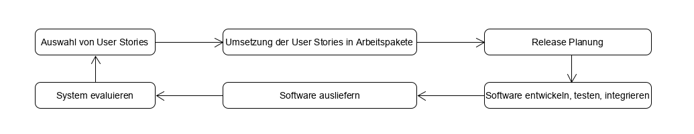

class: center, middle # Kapitel 03: Agile software development Benedikt Wiest --- ## Agenda * Agile Methodik - Herkunft * Das agile Manifest * Agiles Vorgehensmodell - XP * Agiles Vorgehensmodell - Scrum * Skalierung agiler Methodik * Entwicklung großer Softwaresysteme mit agiler Methodik * Agile Methodik in großen Organisationen --- ## Herkunft agiler Methodik * Entwicklungsgrund - Veränderung der Arbeitsweise von Unternehmen/ Organisationen * schnell aufkommende digitale Märkte * Softwareentwicklung muss schneller gehen * Anforderungen an Software ändern sich schneller * Anforderungen kommen erst während der Entwicklung auf * plangesteuerte Vorgehensmodelle werden dem nicht gerecht * Ende der 90er -> agile Methodik * heute als Synonym für schnelle Entwicklung --- ## Eigenschaften von agiler Methodik * agile Methdodik wir in Vorgehensmodellen umgesetzt * Gemeinsamkeiten der meisten Vorgehensmodelle: * Aktivitäten im Entwicklungsprozess sind verschachtelt * Detailierte Spezifikationen werden nicht/ nur minimal erstellt * Keine ausführliche Anforderungsanalyse zu Beginn * Inkrementelle Entwicklung * Einbeziehung der Stakeholder (Feedback) * Nutzung von Tooling zur Unterstützung des Prozess --- ## Das agile Manifest * Erstellt von einem Zusammenschluss von Softwarentwicklern * Versteht sich als Philosophie der agilen Methodik * Basis für alle agilen Vorgehensmodelle * Auszug aus dem agilen Manifest: | Grundsatz | Beschreibung | |--|--| | Einbindung des Kunden | Enge Einbindung des Kunden, Definition und Priorisierung neuer Anforderungen, Feedback zu Iterationen | | Veränderung aufgeschlossen gegenüberstehen| Damit rechnen das sich Anforderungen ändern und Software entsprechend entwickeln | | Inkrementelle Auslieferung | Software wird iterativ entwickelt, Versionen verbessern jeweils die vorherige | | Einfachheit | Komplexität an jeder möglichen Stelle reduzieren um Einfachheit herzustellen | | Menschen > Prozesse | Kompetenz der Entwickler nutzen und die etablierung eigener Arbeitsweisen zulassen, statt stur an Prozessen festzuhalten | --- ## Extreme Programming - XP * Entwickelt von Kent Beck als Reaktion auf agiles Manifest * Benennung, da agile Methodik und iterative Entwicklung auf ein extremes Niveau getrieben wird * XP versteht sich als Vorgehensmodell - High Level enthält der Prozess folgende Schritte 1. Anforderungsanalyse durch User Stories 2. Umsetzung der User Stories in Arbeitspakete (Tasks) 3. Umsetzung der Tasks durch Entwickler in 2er Teams (Test-first Strategie) 4. Integration nach dem alle Tests erfolgreich gelaufen sind 5. Release einer neuen Version * Nachweis über Verfügbarkeit und Durchführung von Sicherheitsprüfungen <div style="margin-top:30px;">  </div> --- ## XP Grundsätze * Umsetzung der agilen Methodik in Grundsätzen - Auszug in Tabelle * Weitere wichtige Bestandteile werden auf den folgenden Slides beschrieben |Grundsatz| Beschreibung | |--|--| | Kollektives Eigentum | Entwicklerpaare arbeiten an jeder Stelle, keine Bildung von Kompetenzinseln. Jeder kann alles ändern. | | Inkrementelle Planung | Anforderungen (User Stories) werden auf Story Cards festgehalten und je nach verfügbarer Zeit und Priorität umgesetzt | | On-site Customer | Kunde ist Bestandteil der Entwicklung, ein repräsentativer End-Nutzer muss dem Entwicklerteam permanent zur Verfügung stehen | | Simple design | Umsetzung nicht über das Ziel hinaus, es wird nur das umgesetzt was angefordert ist | | Konstante Geschwindigkeit | Überarbeitung führt zu schlechterem Code und mittelfristig zur geringerer Produktivität | --- ## User Stories * XP sieht keine seperate Phase der Anforderungserhebung vor - verschachtelt im Entwicklungsprozess * Aufnahme von Anforderungen in Form von User Stories - Nutzungsszenarien * Umsetzung der User Stories in Story Cards - konkrete Beschreibung der Kundenbedürfnisse * Ermittlung von Tasks aus Story Cards - Abschätzung des Aufwand durch Entwickler * Umsetzung der Tasks in einer der folgenden Iterationen * Vorteil -> Menschen können sich besser mit Geschichten identifizieren, als mit Stichpunkten in Anforderungslisten * Nachteil -> erfahrene Benutzer lassen Details weg die für sie selbst offensichtlich sind, dadurch können User Stories unvollständig sein --- ## Refactoring * traditionelles Software Engineering -> Code so entwickeln, dass mögliche Änderung leicht umsetzbar sind * Aufwand relativ hoch * XP -> Keine Zeit darauf verwenden ein System allgemeiner zu gestalten als zwingend nötig * Erwartete Anforderung kommen häufig nicht auf, oder werden anders als geplant gestellt * In XP wird stattdessen permanentes Refactoring gelebt * Refactoring -> Überarbeitung und Optimierung von bestehendem Code * Maßnahmen können beispielswiese die Reorganisation von Klassensturkturen oder das aufräumen von Klassen sein * Vorteile -> permanente Wartung des Code, Verbesserung der Lesbarkeit * Nachteile -> Projektdruck führt dazu das Refactoring übersprungen wird, Refactoring benötigt Ressourcen --- ## Test first Entwicklung * Plangesteuerter Ansatz -> Erstellung von Tests auf Basis der Systemspezifikation * bei agilem Vorgehen existiert vorab keine detailierte Systemspezifikation * XP schlägt eine Test-first Strategie vor * Inkrementelle Entwicklung von Tests - unmittelbar vor dem eigentlichen Code! * Basis -> Story Cards * Einbindung von Endnutzern in die Testentwicklung * Nutzung von automatisierten Test Frameworks (z.B. JUnit) * Vorteile -> implizite Definition von Verhalten und Schnittstellen, Vermeidung von Fehlern, hohe Code coverage * Nachteile -> die Nutzung von Test Frameworks ist nahezu unumgänglich --- ## Pair programming * Entwickler arbeiten in 2er Teams - am selben Computer & Code * Dynamische Bildung der Teams * Keine Bildung von Kompetenzinseln - Realisierung eines Systems als kollektives Eigentum * wenig formelles Überprüfungsverfahren für den Code - 4 Augen Prinzip * Ermutigung zu umfangreichen Refactoring * Gängige Meinung - Pair programming sorgt für Produktivitätsverlust * Studien unter Studenten können keinen Produktivitätsverlust belegen * Studien unter erfahrenen Entwicklern zeigte einen erheblichen Produktivitätsverlust --- ## Scrum * Gewährleistung über Sicherheit des Systems * Dokumentation der verantwortlichen Person * Kontrolle externen Komponententest * Prozesssicherung ist wichtig * Aktivitäten zur Gewährleistung über Sicherheit des Systems 1. Entwicklung von Gefahrenerfassung- und Überwachungssysteme 2. Benennung einer Verantwwortlichen Person 3. Häufige Überprüfung der Sicherheit 4. Detailliertes Konfigurationsmanagement --- ## Formale Verifizierung ### Allgemein * Dienen mathematische Analyse der Spezifikation * Hohe Bedarf an Zusicherung in sicherheitskritischen Systemen * Systemtest sind teuer --- ## Formale Verifizierung ### Vorteile * Erfordert detaillierte Analyse der Anforderungen * Erkennung von möglichen Deadlock ### Nachteile * Durch spezielle Notation nicht immer verständlich * Sehr kostspielig ## --- ## Modellprüfung * Alternative zur formalen Analyse  --- ## Statische Programmanalyse * Analyse des Quelltextes * Ergänzung und kein Ersatz für Inspektion * Ebenen der statischen Programmanalyse 1. Charakteristische Fehlerprüfung 2. Benutzerdefinierte Fehlerprüfung 3. Behauptungsprüfung